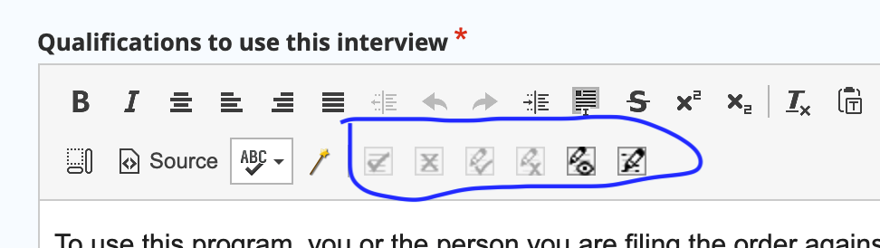

Track changes¶
We use the Lite plugin for Ckeditor 4 to track changes within the WYSIWYG.
Tracking changes is turned off by default. Because the bulk of our content editing is done by staff, we have set them to be off by default.
When turned on, tracking changes will capture changes made by the user.
When content has unapproved tracked changes in it:
Those changes will not be visible in the WYSIWYG unless show track changes is turned on.
Those changes will not be visible in the content.
Warning
It is important when reviewing content from outside editors, who are instructed to use track changes, to turn on both start tracking and show track changes and approve/reject changes before publishing. This is the only way to see if there are incomplete revisions.
There are 6 buttons on the track changes toolbar:
They are (from left to right)
Approve all
Reject all
Approve change
Reject change
Toggle show/hide track changes
Toggle start/stop tracking changes.
When track changes is turned on, additions and deletions will be tracked. If show tracked changes is turned on, they will appear:

If show track changes is turned off, the tracked changes will not appear:

And end users may see no changes or weird changes:

The source code will show a bunch of data tags:

Note
If start tracking changes is turned on, a warning will appear if you attempt to turn them off without approving or rejecting tracked changes.